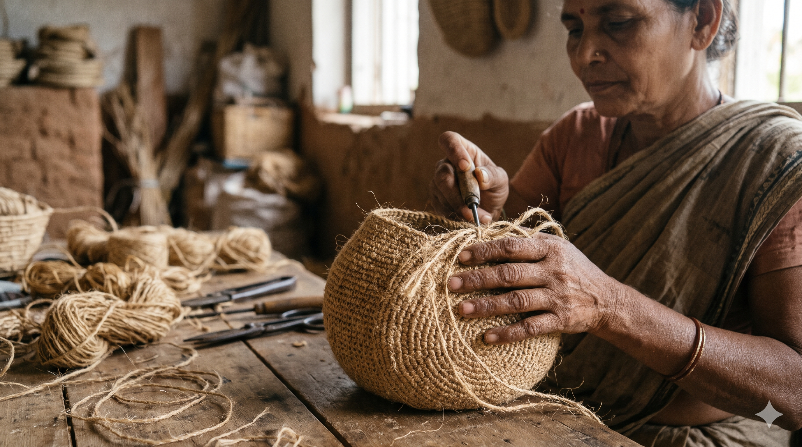

A return to maker.
Natural jute, thoughtful design and skilled hands come together in pieces made to be treasured.
Where craft meets conscious living.
We believe raw plant fibre can become something beautiful and enduring.
In the skilled hands of our artisans, golden fibre becomes pieces of lasting beauty, made with care for the people who use them, the hands that make them and the soil that grows them.
JuteOrb began with a simple wish: to create beautiful handicrafts that last. Not articles made for a moment, but products made with care, integrity and a story worth keeping.


Meet Rohini Jha
Family, a renewed creative purpose and deep respect for the hands behind every piece.
Hi, I am Rohini, the founder of JuteOrb. After fifteen years moving between international corporate environments as a French language expert and the deeply personal world of family, I made a conscious decision to step back and devote time to family. It was a chapter filled with love and growth, and it also created distance from a creative identity I had built through work.
When the spark to create returned, it came with clarity: not to make more, but to make better and finer. I wanted to honour the planet, empower women and local artisans, and celebrate elegance that does not fade with the seasons.
The search led to jute: resilient, renewable and quietly beautiful. Its strength lives in its texture and its character in its natural imperfections. JuteOrb pairs this golden fibre with traditional craftsmanship and a timeless design language.
Having found a way back to my creative self, I am committed to helping other women find theirs. We work with talented artisans, creating fair and sustainable livelihoods while placing their skill, stories and craftsmanship at the heart of every collection.
JuteOrb is for people who notice the details, value what is made with care and believe the most meaningful luxury is the kind that lasts.
“We do not design for a season, but for a reason. We craft for a lifetime.”
With warmth,
Rohini Jha
Founder, JuteOrb
Earth to Eternity.
We envision a future where luxury is measured by elegance, integrity and provenance. Our aspiration is to establish jute as a material of distinction, preserve the mastery of skilled artisans and make pieces that honour the living world.
JuteOrb is a bridge between rural craft traditions and modern life, between the hands that weave and the homes that welcome, and between beauty and responsibility. We want conscious luxury to be a lasting choice: handmade, fair to its makers and gentle on the planet.
Our aspiration
Show jute as a sophisticated, versatile material through thoughtful design and craftsmanship.
Honour artisans
Recognise skilled makers, credit their work and support fair, sustainable livelihoods.
Care for nature
Champion renewable, biodegradable jute and responsible choices across our work.
Create lasting value
Make useful, beautiful pieces designed to be treasured rather than replaced.